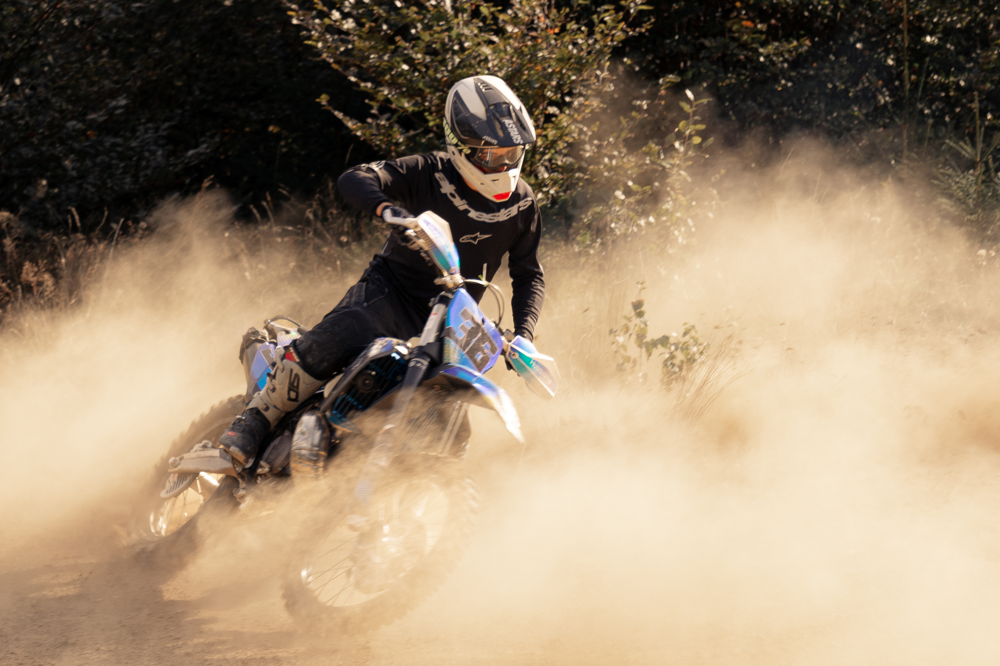
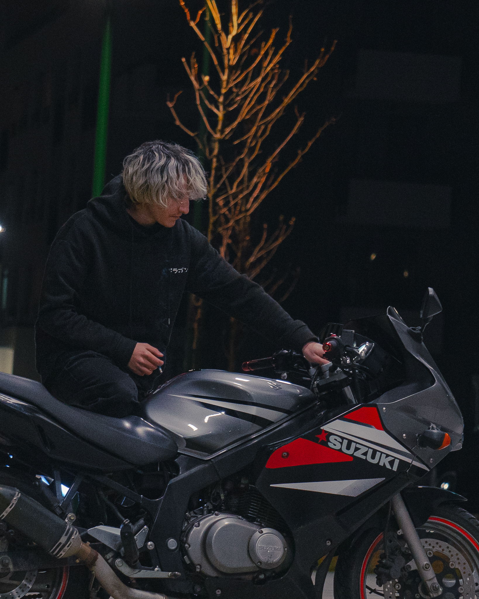

Landing Page
Thank you for visiting my page, here are some of my photos that I took in the past few months. As you will see, my portfolio consists in portraits and motorcycles.
Parkinglot
One of my last photoshots I had with a friend. He has an unique non-formal style.

Ateneu
A classic place to visit in Bucharest, the style should also be on point.

Motocross
Enduro bikes has to be one of my favorites because of how cool these are on heavy road.
Suzuki
And of cours some classic street bikes capable of hight speed in a short distance.
